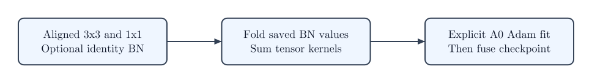
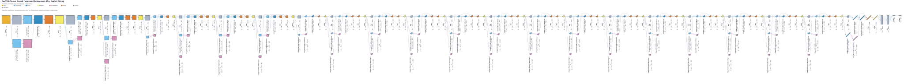
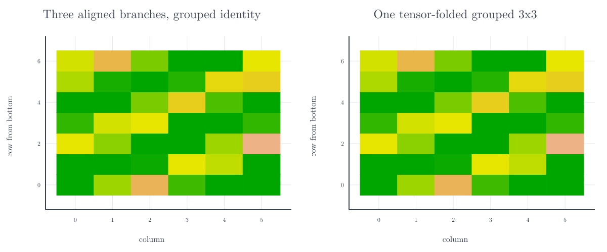
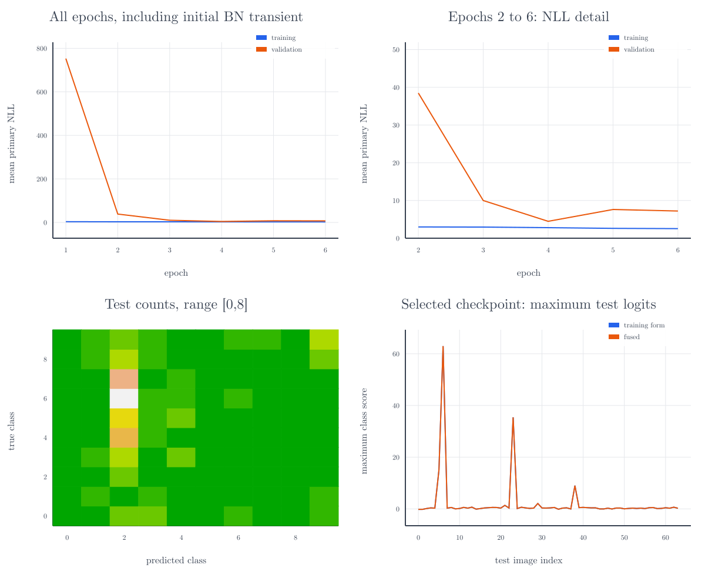
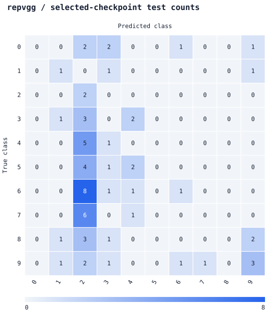

RepVGG: Tensor Branch Fusion and Deployment After Explicit Fitting
Abstract
RepVGG trains with several aligned convolution/BN branches and deploys as a plain 3×3 stack. We verify Float64 fusion and every source derivative, check complete model counts, then explicitly fit A0 and fuse the validation-selected trained checkpoint before test comparison.
Source example: examples/cpp/source/nn/1_convolutional_neural_networks/1.5_attention_and_modern_convnets/repvgg.cpp.
The method
A training-form block sums a bias-free 3×3/BN, a bias-free 1×1/BN and, when widths and stride permit, an identity/BN branch, then applies ReLU. Symmetric pad one aligns the 3×3 centres with the unpadded 1×1 at stride one or two. All BN layers learn scale/shift with epsilon 1e-5. At inference, moments are fixed, so each branch folds into a biased convolution:
Pad the 1×1 filter to the 3×3 centre, turn identity into a grouped one-hot centre kernel, fold its BN, then SUM all kernels and biases. ReLU stays outside. This conversion preserves INFERENCE behavior with saved moments; it does not replace batch-dependent training BN. The implementation uses tensor folding, padding, one-hot kernels and addition, preserving Float32/Float64 without host weight arrays. Functional folding also preserves derivatives with respect to the original filters, gamma/beta and input, as checked in four Float64 fixtures. DeployRepVGG separately detaches independent deployment leaves and copies classifier weights.
A0 has a stem and stages repeating 2/4/14/1, for 22 blocks total, widths 48/96/192/1280 and a 48-channel stem. Every stage begins with stride two; the reference stem also uses two. A1/A2 scale widths, while B variants repeat 4/6/16/1. g2/g4 variants group only even block indices 2..26 after the stem. He-uniform initialization and the biased global-mean classifier follow the source. Full A0 has 9108968 learned plus 23648 BN-state scalars; deployment has 8309384 learned and no BN state. All ten actual full-weight training and deployment counts are checked at 32 pixels, releasing one form before allocating the other. Reference 224-pixel convolution output sides are exactly seven times these maps, so MACs scale by 49 while classifier work stays fixed. A0 also executes at 224 pixels. Larger full-resolution forwards and latency measurements are not claimed; MACs omit BN/activation/addition/memory work.
The full CIFAR A0 fit changes stem stride to one and classes to ten, retaining all 22 blocks and four stage downsamplings, with 7840778 training parameters. Its visible loop uses 64 fit, 64 validation and 64 official-test images, six batch-eight epochs (48 updates, kept short so the report runs in seconds), tensor Adam(.001), explicit kernel L2=.0001/2 and independent padded crops/flips. Validation selects paired learned/BN checkpoints. Only THEN does visible code fuse that trained checkpoint into 7041194 deployed scalars and compare all 64 test logits/predictions with training-form inference. This verifies actual fitted conversion, without claiming the small subset reproduces paper accuracy or speed.
The concept diagram below is drawn by dm::graphics::Diagram. Its editable C++
source is the complete block below; regeneration uses the same datamunge toolchain
as the numerical examples. Exports consume the saved local SVG.
#include <dm/dm.hpp>
int main() {
std::filesystem::create_directories("build");
dm::graphics::Diagram diagram;
diagram.node("n0", {0.0, 0}, "Aligned 3x3 and 1x1\nOptional identity BN");
diagram.node("n1", {5.2, 0}, "Fold saved BN values\nSum tensor kernels");
diagram.node("n2", {10.4, 0}, "Explicit A0 Adam fit\nThen fuse checkpoint");
diagram.edge("n0", "n1").edge("n1", "n2");
diagram.save_svg("build/repvgg_concept.svg");
}
Executed tensor architecture
This figure executes the inference configuration shown in the code, using a zero-valued shape probe without fitting or loading a checkpoint. Named stage boundaries group whole subgraphs where available; other nodes retain functional-layer detail. Exact batch-inclusive shapes and reachable parameter totals come from the trace. Shared linear scales map spatial dimensions and channel counts to blocks; the one-pixel visibility floor is disclosed in the legend. Labels use compact monospace text, rotate counterclockwise and sit beside their own glyphs. Arrows flow left to right; wide diagrams scroll at native size on the website.
#include <dm/dm.hpp>
int main() {
namespace n = dm::nn;
namespace m = n::models;
n::set_num_threads(2);
std::filesystem::create_directories("build");
n::models::RepVGGConfig cfg;
cfg.classes = 10;
cfg.small_stem = true;
n::ParameterStore p(17), state(17);
n::Module architecture_model(
[&](const n::Tensor& image) { return n::models::RepVGG(p, state, image, cfg, false).logits; },
"RepVGG: Tensor Branch Fusion and Deployment After Explicit Fitting");
n::ModelPlotOptions options;
options.style = n::ModelPlotStyle::Flow;
options.detail = n::ModelPlotDetail::Blocks;
options.labels = {.type = n::ModelPlotLabel::NameAndShape, .size = 12, .wrap = 24};
options.spacing = {.layer = 24, .lane = 12, .label = 8, .margin = 20};
options.sizing.spatial_size = 96;
options.sizing.channel_size = 42;
options.sizing.minimum_extent = 1;
options.opacity = .8;
const auto diagram = architecture_model.plot(n::zeros({1, 32, 32, 3}), options);
diagram.save_svg("build/repvgg_architecture.svg");
std::print(
"{} displayed nodes; {} reachable learned values.\n",
diagram.nodes().size(),
diagram.parameter_count());
}193 displayed nodes; 7840778 reachable learned values.

Four block fusion and derivative checks
#include <dm/dm.hpp>
void perturb(dm::nn::ParameterStore &p, dm::nn::ParameterStore &state) {
namespace n = dm::nn;
n::NoGradGuard guard;
for (const auto &name : p.names())
if (name.find("/bn/") != std::string::npos) {
const auto pattern = .2 * n::sin(.37 * n::arange(0, p.at(name).numel()).to(p.dtype()) +
double(name.size()));
p.set(name, pattern + (name.ends_with("gamma") ? 1. : .3));
}
for (const auto &name : state.names()) {
const auto pattern =
.2 * n::sin(.37 * n::arange(0, state.at(name).numel()).to(state.dtype()) +
double(name.size()));
state.set(name, pattern + (name.ends_with("moving_var") ? 1. : 0.));
}
}
int main() {
namespace n = dm::nn;
const auto type = n::DType::Float64;
auto layout = dm::graphics::RLayout::create(1, 2);
double maximum = 0;
for (const auto &b :
std::vector<n::models::RepVGGBlockSpec>{{"identity", 8, 8, 1, 1, true},
{"stride", 8, 12, 2, 1, false},
{"grouped", 8, 8, 1, 2, true},
{"group_stride", 8, 12, 2, 2, false}}) {
n::ParameterStore p(17, type), state(17, type);
const auto x = n::sin(.17 * n::arange(0, 2 * 7 * 6 * 8).to(type) + .3)
.reshape({2, 7, 6, 8})
.detach()
.requires_grad_();
{
n::NoGradGuard guard;
n::models::RepVGGBlock(p, state, b, x, false, false);
}
perturb(p, state);
const auto out = n::models::RepVGGBlock(p, state, b, x, false, false);
auto vars = p.parameters();
vars.insert(vars.begin(), x);
const auto expected = n::grad(n::mean(n::square(out)), vars);
const auto fused = n::models::FuseRepVGGBlock(b, p, state);
if (fused.bias.dtype() != type)
return 1;
auto options = n::conv_options(b.stride, n::Padding::Explicit);
options.explicit_paddings = {1, 1, 1, 1};
options.groups = b.groups;
const auto packed =
n::relu(n::bias_add(n::conv2d(x, n::concat(fused.kernels, 3), options), fused.bias));
double error = n::max(n::abs(out - packed)).item();
const auto actual = n::grad(n::mean(n::square(packed)), vars);
for (size_t i = 0; i < vars.size(); ++i)
error = std::max(error, n::max(n::abs(actual[i] - expected[i])).item());
if (error > 1e-10)
return 1;
maximum = std::max(maximum, error);
std::print("{}: outputs and all input/filter/BN affine derivatives agree; absolute max "
"error {:.12f}.\n",
b.name, error);
if (b.name == "grouped") {
auto map = [](const n::Tensor &h) {
return n::slice_axis(n::slice_axis(h, 0, 0, 1), 3, 0, 1).reshape({7, 6});
};
const double high = std::max(1e-12, n::max(out).item());
layout
.add(n::plot_tensor_map(map(out), 0, high)
.title("Three aligned branches, grouped identity"))
.add(
n::plot_tensor_map(map(packed), 0, high).title("One tensor-folded grouped 3x3"));
}
}
std::filesystem::create_directories("build");
layout.size(1200, 500).fit_panels().save_svg("build/repvgg_fusion.svg");
std::print("Tensor folding preserves Float64 without host weight arrays; maximum "
"derivative/value error across four cases {:.12f}. Equivalence uses saved BN "
"moments, not training batch moments.\n",
maximum);
}identity: outputs and all input/filter/BN affine derivatives agree; absolute max error 0.000000000000. stride: outputs and all input/filter/BN affine derivatives agree; absolute max error 0.000000000000. grouped: outputs and all input/filter/BN affine derivatives agree; absolute max error 0.000000000000. group_stride: outputs and all input/filter/BN affine derivatives agree; absolute max error 0.000000000000. Tensor folding preserves Float64 without host weight arrays; maximum derivative/value error across four cases 0.000000000000. Equivalence uses saved BN moments, not training batch moments.

Complete A0 conversion
#include <dm/dm.hpp>
void perturb(dm::nn::ParameterStore &p, dm::nn::ParameterStore &state) {
namespace n = dm::nn;
n::NoGradGuard guard;
for (const auto &name : p.names())
if (name.find("/bn/") != std::string::npos) {
const auto pattern = .2 * n::sin(.37 * n::arange(0, p.at(name).numel()).to(p.dtype()) +
double(name.size()));
p.set(name, pattern + (name.ends_with("gamma") ? 1. : .3));
}
for (const auto &name : state.names()) {
const auto pattern =
.2 * n::sin(.37 * n::arange(0, state.at(name).numel()).to(state.dtype()) +
double(name.size()));
state.set(name, pattern + (name.ends_with("moving_var") ? 1. : 0.));
}
}
int main() {
namespace n = dm::nn;
n::set_num_threads(2);
n::NoGradGuard guard;
n::ParameterStore p(17), state(17);
const auto x = n::sin(.37 * n::arange(0, 64 * 64 * 3).to(n::DType::Float32) + .1)
.reshape({1, 64, 64, 3});
n::models::RepVGG(p, state, x);
perturb(p, state);
const auto out = n::models::RepVGG(p, state, x);
if (p.count() != 9108968 || state.count() != 23648 || out.blocks.size() != 22)
return 1;
n::ParameterStore deployed(19), empty(19);
n::models::DeployRepVGG(deployed, out.blocks, p, state);
n::models::RepVGGConfig cfg;
cfg.deploy = true;
const auto converted = n::models::RepVGG(deployed, empty, x, cfg);
if (deployed.count() != 8309384 || empty.count() != 0)
return 1;
const double error = n::max(n::abs(converted.logits - out.logits)).item() /
std::max(1., n::max(n::abs(out.logits)).item());
if (error > 1e-4)
return 1;
std::print("Complete ImageNet-classifier A0 at 64 pixels: 22 blocks fused, {} training + {} "
"BN-state scalars become {} deployed scalars; relative max-logit error {:.9f}.\n",
p.count(), state.count(), deployed.count(), error);
}Complete ImageNet-classifier A0 at 64 pixels: 22 blocks fused, 9108968 training + 23648 BN-state scalars become 8309384 deployed scalars; relative max-logit error 0.000000753.
Ten full-weight budgets
#include <dm/dm.hpp>
int main() {
namespace n = dm::nn;
n::set_num_threads(2);
struct Case {
const char *name;
int64_t train, deploy, macs;
};
for (const auto &c : std::vector<Case>{{"A0", 9108968, 8309384, 1361451008},
{"A1", 14092264, 12789864, 2363967488},
{"A2", 28210600, 25499944, 5116951552},
{"B0", 15817960, 14339048, 3057600512},
{"B1", 57415016, 51829480, 11815485440},
{"B1g2", 45782376, 41360104, 8809742336},
{"B1g4", 39966056, 36125416, 7306870784},
{"B2", 89022376, 80315112, 18376609792},
{"B2g4", 61758376, 55777512, 11331899392},
{"B3", 123085288, 110960872, 26208882688}}) {
n::NoGradGuard guard;
n::models::RepVGGConfig cfg;
cfg.model = c.name;
int64_t learned;
{
n::ParameterStore p(17), state(17);
n::models::RepVGG(p, state, n::zeros({1, 32, 32, 3}), cfg);
learned = p.count();
}
n::ParameterStore p(17), state(17);
cfg.deploy = true;
const auto out = n::models::RepVGG(p, state, n::zeros({1, 32, 32, 3}), cfg);
const int64_t classifier = int64_t(out.blocks.back().out) * 1000;
int64_t macs = classifier;
for (size_t i = 0; i < out.blocks.size(); ++i) {
const auto &b = out.blocks[i];
macs +=
out.outputs[i].size(1) * out.outputs[i].size(2) * 49 * 9 * b.in * b.out / b.groups;
}
if (learned != c.train || p.count() != c.deploy || macs != c.macs || state.count() != 0)
return 1;
if (std::string(c.name) == "A0") {
const auto actual = n::models::RepVGG(p, state, n::zeros({1, 224, 224, 3}), cfg);
int64_t check = classifier;
for (size_t i = 0; i < actual.blocks.size(); ++i) {
const auto &b = actual.blocks[i];
check += actual.outputs[i].size(1) * actual.outputs[i].size(2) * 9 * b.in * b.out /
b.groups;
}
if (check != macs)
return 1;
}
std::print("{}: {} actual training / {} actual deployed parameters; exact 224-pixel "
"deployed budget {} MACs.\n",
c.name, learned, p.count(), macs);
}
std::print("All ten full-weight forms execute at 32 pixels for counts, releasing training "
"weights before allocating deployment form. Every strided map scales exactly "
"sevenfold per side at 224 pixels, so convolution work scales by 49; classifier "
"stays fixed. A0 additionally executes an actual 224-pixel cross-check. No "
"runtime or all-model full-resolution execution is claimed.\n");
}A0: 9108968 actual training / 8309384 actual deployed parameters; exact 224-pixel deployed budget 1361451008 MACs. A1: 14092264 actual training / 12789864 actual deployed parameters; exact 224-pixel deployed budget 2363967488 MACs. A2: 28210600 actual training / 25499944 actual deployed parameters; exact 224-pixel deployed budget 5116951552 MACs. B0: 15817960 actual training / 14339048 actual deployed parameters; exact 224-pixel deployed budget 3057600512 MACs. B1: 57415016 actual training / 51829480 actual deployed parameters; exact 224-pixel deployed budget 11815485440 MACs. B1g2: 45782376 actual training / 41360104 actual deployed parameters; exact 224-pixel deployed budget 8809742336 MACs. B1g4: 39966056 actual training / 36125416 actual deployed parameters; exact 224-pixel deployed budget 7306870784 MACs. B2: 89022376 actual training / 80315112 actual deployed parameters; exact 224-pixel deployed budget 18376609792 MACs. B2g4: 61758376 actual training / 55777512 actual deployed parameters; exact 224-pixel deployed budget 11331899392 MACs. B3: 123085288 actual training / 110960872 actual deployed parameters; exact 224-pixel deployed budget 26208882688 MACs. All ten full-weight forms execute at 32 pixels for counts, releasing training weights before allocating deployment form. Every strided map scales exactly sevenfold per side at 224 pixels, so convolution work scales by 49; classifier stays fixed. A0 additionally executes an actual 224-pixel cross-check. No runtime or all-model full-resolution execution is claimed.
Complete training-form backward
#include <dm/dm.hpp>
int main() {
namespace n = dm::nn;
n::set_num_threads(2);
n::ParameterStore p(17), state(17);
n::models::RepVGGConfig cfg;
cfg.classes = 10;
cfg.small_stem = true;
cfg.update_stats = false;
const auto x = n::sin(.37 * n::arange(0, 2 * 32 * 32 * 3).to(n::DType::Float32))
.reshape({2, 32, 32, 3});
{
n::NoGradGuard guard;
n::models::RepVGG(p, state, x, cfg);
}
const auto before = state.flatten();
const auto out = n::models::RepVGG(p, state, x, cfg, true);
const auto gradients = n::grad(n::mean(n::square(out.logits)), p.parameters());
double low = std::numeric_limits<double>::infinity(), high = 0;
for (const auto &g : gradients) {
const double norm = n::sqrt(n::sum(n::square(g))).item();
if (!std::isfinite(norm))
return 1;
low = std::min(low, norm);
high = std::max(high, norm);
}
if (high == 0 || state.flatten() != before)
return 1;
std::print("Complete CIFAR A0: {} finite parameter-tensor gradients; norms "
"[{:.12f},{:.9f}], all 22 blocks retained and BN updates frozen.\n",
gradients.size(), low, high);
}Complete CIFAR A0: 168 finite parameter-tensor gradients; norms [0.110108911991,89.959045410], all 22 blocks retained and BN updates frozen.
Original images and explicit fitting/deployment
#include <dm/dm.hpp>
int main() {
namespace n = dm::nn;
std::filesystem::path cache;
if (const auto *p = std::getenv("DATAMUNGE_DATA_DIR"))
cache = p;
else if (const auto *p = std::getenv("XDG_CACHE_HOME"))
cache = std::filesystem::path(p) / "datamunge/datasets";
else
cache = std::filesystem::path(std::getenv("HOME")) / ".cache/datamunge/datasets";
dm::datasets::fetch("cifar10", (cache / "cifar10").string());
const auto raw =
n::data::LoadCifar({cache / "cifar10/data_batch_1.bin"}, n::data::Cifar::k10);
const auto images = n::cast(raw.images, n::DType::Float32) / 255.;
const auto labels = raw.labels;
std::vector<int64_t> rows;
for (int cls = 0; cls < 10; ++cls) {
for (int64_t row = 0; row < labels.numel(); ++row)
if (labels.at({row}) == cls) {
rows.push_back(row);
break;
}
}
if (rows.size() != 10)
return 1;
std::filesystem::create_directories("build");
n::save_image_grid(n::take_rows(images, rows), "build/repvgg_inputs.png", 5, 0., 1., 4, 1.,
4);
std::print("One original cached training image per class, IDs 0..4 then 5..9.\n");
}One original cached training image per class, IDs 0..4 then 5..9.

#include <dm/dm.hpp>
int main() {
int rendered_confusions = 0;
namespace n = dm::nn;
n::set_num_threads(2);
std::filesystem::path cache;
if (const auto* p = std::getenv("DATAMUNGE_DATA_DIR"))
cache = p;
else if (const auto* p = std::getenv("XDG_CACHE_HOME"))
cache = std::filesystem::path(p) / "datamunge/datasets";
else
cache = std::filesystem::path(std::getenv("HOME")) / ".cache/datamunge/datasets";
dm::datasets::fetch("cifar10", (cache / "cifar10").string());
const auto raw = n::data::LoadCifar({cache / "cifar10/data_batch_1.bin"}, n::data::Cifar::k10);
const auto images = n::cast(raw.images, n::DType::Float32) / 255.,
labels = n::cast(raw.labels, n::DType::Int64);
const auto tx = n::slice_axis(images, 0, 0, 64), ty = n::slice_axis(labels, 0, 0, 64);
const auto vx = 2 * n::slice_axis(images, 0, 64, 128) - 1, vy = n::slice_axis(labels, 0, 64, 128);
const auto official = n::load_cifar10((cache / "cifar10").string(), "test");
const auto qx = 2 * n::slice_axis(official.images, 0, 0, 64) - 1,
qy = n::slice_axis(official.labels, 0, 0, 64);
n::models::RepVGGConfig cfg;
cfg.classes = 10;
cfg.small_stem = true;
n::ParameterStore p(17), state(17);
auto output = [&](const n::Tensor& image, bool training) {
return n::models::RepVGG(p, state, image, cfg, training).logits;
};
{
n::NoGradGuard guard;
output(n::zeros({1, 32, 32, 3}), false);
}
if (p.count() != 7840778)
return 1;
n::OptimizerConfig config;
config.kind = n::OptimizerKind::Adam;
n::Optimizer optimizer(p, .001, config);
n::BatchOrder batches(64, 8, 2026);
n::Generator augmentation(151);
std::filesystem::create_directories("build");
const std::string checkpoint = "build/repvgg_best";
double best = std::numeric_limits<double>::infinity();
int best_epoch = 0;
std::vector<double> epochs, train, validation;
for (int epoch = 1; epoch <= 6; ++epoch) {
batches.begin_epoch();
n::WeightedMean average;
for (auto rows = batches.next(); !rows.empty(); rows = batches.next()) {
const auto batch = n::take_rows(tx, rows), target = n::take_rows(ty, rows);
std::vector<n::Tensor> transformed;
for (int64_t row = 0; row < batch.size(0); ++row) {
auto image =
n::pad(n::slice_axis(batch, 0, row, row + 1), {{0, 0}, {4, 4}, {4, 4}, {0, 0}});
image = n::augment::random_crop(image, 32, 32, augmentation);
transformed.push_back(n::augment::random_flip_left_right(image, augmentation));
}
const auto nll =
n::sparse_softmax_cross_entropy(output(2 * n::concat(transformed, 0) - 1, true), target);
auto objective = nll;
for (const auto& w : p.parameters())
if (w.dim() >= 2)
objective = objective + .00005 * n::sum(n::square(w));
optimizer.minimize(objective);
average.add(nll.item(), rows.size());
}
n::NoGradGuard guard;
const double val = n::sparse_softmax_cross_entropy(output(vx, false), vy).item();
if (!std::isfinite(val))
return 1;
epochs.push_back(epoch);
train.push_back(average.value());
validation.push_back(val);
if (val < best) {
best = val;
best_epoch = epoch;
p.save(checkpoint + "_params.npz");
state.save(checkpoint + "_state.npz");
}
}
p.load(checkpoint + "_params.npz");
state.load(checkpoint + "_state.npz");
n::NoGradGuard guard;
const auto selected = n::models::RepVGG(p, state, qx, cfg, false);
n::ParameterStore deployed(19), unused(19);
n::models::DeployRepVGG(deployed, selected.blocks, p, state);
auto deploy_cfg = cfg;
deploy_cfg.deploy = true;
const auto packed = n::models::RepVGG(deployed, unused, qx, deploy_cfg, false);
const double fusion_error = n::max(n::abs(selected.logits - packed.logits)).item() /
std::max(1., n::max(n::abs(selected.logits)).item());
const int64_t disagreements =
n::count_nonzero(n::not_equal(n::argmax(selected.logits, 1), n::argmax(packed.logits, 1)))
.item<int64_t>();
if (fusion_error > 1e-4 || deployed.count() != 7041194 || unused.count() != 0)
return 1;
std::print(
"Selected trained checkpoint: 22 blocks fused into {} deployed scalars, no BN state; "
"test-logit relative max error {:.9f}, {} of 64 prediction disagreements.\n",
deployed.count(),
fusion_error,
disagreements);
const auto prediction = selected.logits;
const double test_nll = n::sparse_softmax_cross_entropy(prediction, qy).item();
const double training_nll = n::sparse_softmax_cross_entropy(output(2 * tx - 1, false), ty).item();
if (!std::isfinite(test_nll))
return 1;
const auto truth = n::one_hot(qy, 10), predicted = n::one_hot(n::argmax(prediction, 1), 10);
const auto confusion = n::matmul(n::transpose(truth, {1, 0}), predicted);
n::save_npz("build/repvgg_heldout_"+std::to_string(rendered_confusions)+".npz",{{"truth",qy},{"logits",prediction},{"counts",confusion.to(n::DType::Int64)}});
n::ConfusionMatrix::from_counts(confusion.to(n::DType::Int64))
.save_svg(
"build/repvgg_confusion_api_" + std::to_string(rendered_confusions++) + ".svg",
{.title = "repvgg / selected-checkpoint test counts"});
if (n::sum(confusion).item() != 64)
return 1;
auto trace = dm::graphics::RPlot::create();
trace.lines(epochs, train, "training", {37, 99, 235})
.lines(epochs, validation, "validation", {234, 88, 12})
.title("All epochs, including initial BN transient")
.x_label("epoch")
.y_label("mean primary NLL");
// Flip before the image helper so its vertical tick is the actual true-class ID.
auto counts = n::plot_tensor_map(n::reverse(confusion, {0}), 0, n::max(confusion).item());
counts
.title(
"Test counts, range [0," + std::to_string(static_cast<int>(n::max(confusion).item())) +
"]")
.x_label("predicted class")
.y_label("true class")
.x_limits(-.5, 9.5)
.y_limits(-.5, 9.5);
const std::vector<double> later_epochs(epochs.begin() + 1, epochs.end()),
later_train(train.begin() + 1, train.end()),
later_validation(validation.begin() + 1, validation.end());
const double detail_high =
1.35 * std::max(
*std::max_element(later_train.begin(), later_train.end()),
*std::max_element(later_validation.begin(), later_validation.end()));
auto detail = dm::graphics::RPlot::create();
detail.lines(later_epochs, later_train, "training", {37, 99, 235})
.lines(later_epochs, later_validation, "validation", {234, 88, 12})
.title("Epochs 2 to 6: NLL detail")
.x_label("epoch")
.y_label("mean primary NLL")
.y_limits(0, detail_high);
auto agreement = dm::graphics::RPlot::create();
agreement
.lines(
n::arange(0, 64).to_vector<double>(),
n::max(selected.logits, {1}).to_vector<double>(),
"training form",
{37, 99, 235})
.lines(
n::arange(0, 64).to_vector<double>(),
n::max(packed.logits, {1}).to_vector<double>(),
"fused",
{234, 88, 12})
.title("Selected checkpoint: maximum test logits")
.x_label("test image index")
.y_label("maximum class score");
dm::graphics::RLayout::create(2, 2)
.add(trace)
.add(detail)
.add(counts)
.add(agreement)
.size(1200, 980)
.fit_panels()
.save_svg("build/repvgg_training.svg");
std::print(
"64 fit / 64 validation / 64 official-test rows; {} learned scalars, {} moving "
"scalars; {} explicit Adam updates.\nSelected epoch {}; validation NLL {:.6f}; "
"inference training NLL {:.6f}; test NLL {:.6f}; test accuracy {:.6f}.\n",
p.count(),
state.count(),
optimizer.iterations(),
best_epoch,
best,
training_nll,
test_nll,
n::accuracy(prediction, qy));
}Selected trained checkpoint: 22 blocks fused into 7041194 deployed scalars, no BN state; test-logit relative max error 0.000000184, 0 of 64 prediction disagreements. 64 fit / 64 validation / 64 official-test rows; 7840778 learned scalars, 23648 moving scalars; 48 explicit Adam updates. Selected epoch 4; validation NLL 4.478415; inference training NLL 3.908674; test NLL 3.056553; test accuracy 0.109375.

The executed results above report the current selected checkpoint. These fixed small subsets and source budgets do not establish a ranking of architectures. Assess training, validation and test NLL together with the complete held-out confusion. Augmented or batch-moment training objectives and saved-state inference can differ; weak or below-chance outcomes remain part of the result. The independent geometry, parameter-count and derivative checks establish separate implementation claims.
Native confusion matrices
These matrices use the held-out predictions from the executed program above.
The native ConfusionMatrix SVG API labels exact counts with true classes
running from top to bottom and predicted classes from left to right.

Regenerate every adjacent view
Each alternate architecture or held-out confusion below is copied from this run's local build directory.
#include <dm/dm.hpp>
int main(){std::filesystem::create_directories("build");std::filesystem::copy_file("build/repvgg_confusion_api_0.svg","build/export_repvgg_confusion_api_0.svg",std::filesystem::copy_options::overwrite_existing);}Conclusion
Fixed inference BN turns aligned branches into one equivalent biased 3×3 filter. Tensor folding preserves dtype and source derivatives, while explicit deployment creates independent leaves. The visible optimizer and selected-checkpoint conversion connect that algebra to a fitted complete A0 network, with bounded-data accuracy and arithmetic claims kept explicit.
References
- [Ding et al. (2021), RepVGG: Making VGG-style ConvNets Great Again](https://arxiv.org/abs/2101.03697).
- [RepVGG release](https://github.com/DingXiaoH/RepVGG).
- [CIFAR-10 dataset](https://www.cs.toronto.edu/~kriz/cifar.html).